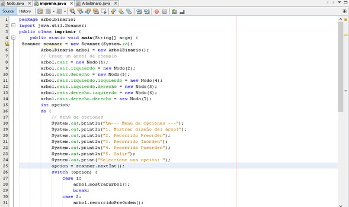

UNIDAD 4: Estructuras No Lineales
4.1 Árboles (Trees)
4.1.1 Clasificación de Árboles
Los árboles son estructuras de datos jerárquicas que se utilizan para representar relaciones entre nodos, donde cada nodo tiene un único nodo padre (excepto el nodo raíz) y puede tener varios hijos. Los tipos más comunes de árboles incluyen:
- Árbol Binario: Es un árbol en el que cada nodo tiene como máximo dos hijos. Es la base para muchas estructuras de datos y algoritmos, como las búsquedas binarias.
- Árbol de Búsqueda Binaria (BST): Este tipo de árbol binario tiene la propiedad de que, para cada nodo, todos los valores en el subárbol izquierdo son menores, y todos los valores en el subárbol derecho son mayores. Esto permite realizar búsquedas, inserciones y eliminaciones en tiempo logarítmico.
- Árbol AVL: Es un tipo de árbol binario de búsqueda autobalanceado. Se asegura de que la diferencia de altura entre los subárboles izquierdo y derecho no sea mayor que 1, lo que mantiene el árbol equilibrado y garantiza una búsqueda eficiente.
- Árbol N-ario: A diferencia de los árboles binarios, los árboles N-arios permiten que cada nodo tenga hasta "N" hijos. Son útiles en aplicaciones como la representación de directorios en un sistema de archivos.
- Árboles de Expresión: Son utilizados en la representación de expresiones algebraicas y aritméticas. Cada nodo es un operador y sus hijos son los operandos de la operación.
- Árbol Rojo-Negro y Árbol Splay: Son ejemplos de árboles balanceados que garantizan un tiempo de acceso eficiente para la búsqueda, inserción y eliminación de nodos.
4.1.2 Operaciones Básicas sobre Árboles
Las operaciones básicas en los árboles incluyen:
- Inserción: Agregar un nuevo nodo en el lugar correspondiente dentro del árbol, respetando las reglas de la estructura (por ejemplo, el orden en un BST).
- Eliminación: Eliminar un nodo de un árbol, asegurándose de que la estructura del árbol se mantenga consistente. En los árboles binarios de búsqueda, la eliminación puede requerir la reestructuración del árbol.
- Búsqueda: Localizar un nodo específico dentro del árbol. En los árboles binarios de búsqueda, este proceso es rápido debido a su estructura ordenada.
- Recorridos:
- Preorden: Primero visita la raíz, luego los subárboles izquierdo y derecho.
- Inorden: Visita el subárbol izquierdo, luego la raíz y luego el subárbol derecho. Es utilizado en árboles binarios de búsqueda para obtener los nodos en orden ascendente.
- Postorden: Visita los subárboles antes de la raíz.
- Por niveles (Nivel a nivel): Es un recorrido que visita todos los nodos de un nivel antes de pasar al siguiente, útil para representar árboles en estructura de pila o cola.
4.1.3 Aplicaciones de los Árboles
Los árboles tienen muchas aplicaciones importantes en la informática y la programación. Algunos de sus usos incluyen:
- Sistemas de Archivos: Los sistemas de archivos de las computadoras están organizados como un árbol. Los directorios y subdirectorios representan los nodos del árbol, permitiendo una navegación eficiente y una jerarquización lógica de los archivos.
- Árboles de Decisión: Se utilizan en la inteligencia artificial y el aprendizaje automático. Un árbol de decisión es un modelo que ayuda a tomar decisiones basadas en ciertas reglas. Cada nodo representa una prueba sobre un atributo, y cada rama representa un resultado de esa prueba.
- Representación de Expresiones Matemáticas: Los árboles se usan para representar expresiones aritméticas. En este caso, cada nodo es un operador y sus hijos son los operandos. Esto es útil en compiladores y en la evaluación de expresiones complejas.
- Búsqueda y Ordenación: Los árboles binarios de búsqueda son eficientes para realizar búsquedas y ordenar datos. Permiten realizar operaciones como insertar, eliminar y buscar elementos con complejidad logarítmica, lo que mejora significativamente el rendimiento en comparación con las listas no ordenadas.
- Compiladores: Los compiladores utilizan árboles sintácticos abstractos para representar la estructura gramatical de un programa. Esto les permite analizar y generar el código que se ejecutará en la máquina.
- Juegos: En los juegos de estrategia, como el ajedrez, los árboles de búsqueda se utilizan para modelar los posibles movimientos y evaluar el mejor movimiento según un algoritmo de minimax.
- Base de Datos: Los árboles B y B+ se utilizan en sistemas de bases de datos para indexar grandes cantidades de datos, permitiendo una búsqueda rápida y eficiente.
- Compresión de Datos: Los árboles de Huffman son ampliamente utilizados en algoritmos de compresión como los que se emplean en formatos de archivo como ZIP y JPEG. La idea es asignar códigos más cortos a los elementos más frecuentes para reducir el tamaño total del archivo.
4.2 Grafos (Graphs)
4.2.1 Representación de Grafos
Un grafo es una estructura compuesta por nodos (vértices) conectados por aristas (edges). Existen diferentes tipos de grafos según su estructura y el tipo de relación que representan:
- Dirigido (DAG): En estos grafos, las aristas tienen una dirección, es decir, van de un nodo a otro. Son útiles para representar dependencias y relaciones de causa y efecto.
- No dirigido: En estos, las aristas no tienen una dirección específica, lo que significa que la relación es bidireccional.
- Ponderado: Las aristas tienen un peso, que puede representar costos, distancias, tiempos de espera, etc.
- No ponderado: Las aristas no tienen peso, simplemente indican la existencia de una conexión entre los nodos.
Los grafos se representan generalmente de dos maneras:
- Matriz de adyacencia: Una matriz de tamaño \( n \times n \) que indica si dos nodos están conectados o no.
- Lista de adyacencia: Cada nodo tiene una lista de otros nodos a los que está directamente conectado, lo que es más eficiente en términos de memoria cuando los grafos son dispersos.
Ejemplo
